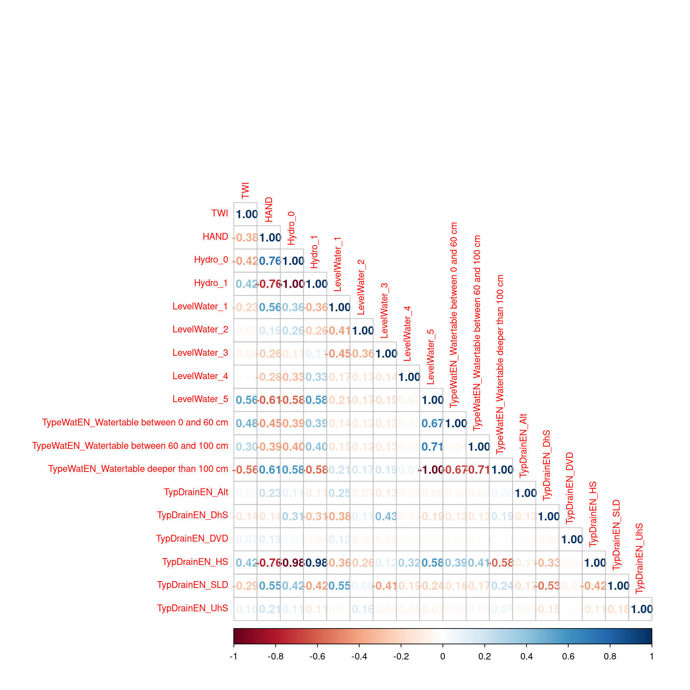

This book is in Open Review. I want your feedback to make the book better for you and other readers. To add your annotation, select some text and then click the on the pop-up menu. To see the annotations of others, click the in the upper right hand corner of the page
Chapter 1 Environmental descriptors
# data
paracou <- vroom::vroom("data/paracou.tsv") %>%
filter(CensusYear == 2019)
paracouXY <- paracou %>%
filter(!is.na(Xutm), !is.na(Yutm)) %>%
st_as_sf(coords = c("Xutm", "Yutm"),
crs = '+proj=utm +zone=22 +datum=WGS84 +units=m +no_defs +ellps=WGS84 +towgs84=0,0,0')
# rasters
paracouXY$TWI <- raster::extract(raster::raster("data/TWI_1m.tif"), paracouXY)
paracouXY <- mutate(paracouXY, TWI = ifelse(TWI < 0, 0, TWI))
paracouXY$HAND <- raster::extract(raster::raster("data/RelativeElevation_1m.tif"), paracouXY)
paracou <- paracou %>%
left_join(select(paracouXY, idTree, TWI, HAND) %>% st_drop_geometry())
# shapefiles
readshp <- function(path){
shp <- st_read(path, crs = '+proj=utm +zone=22 +datum=WGS84 +units=m +no_defs +ellps=WGS84 +towgs84=0,0,0')
shp$geometry <- lwgeom::lwgeom_make_valid(st_as_sfc(shp))
return(shp)
}
paracou <- paracou %>%
left_join(st_intersection(readshp("data/Hydromorphy/Hydromorphy.shp"), paracouXY) %>%
st_drop_geometry() %>%
select(idTree, Hydro)) %>%
left_join(st_intersection(readshp("data/WaterLogging/Waterlogging.shp"), paracouXY) %>%
st_drop_geometry() %>%
select(idTree, LevelWater)) %>%
left_join(st_intersection(readshp("data/WaterTable/WaterTable.shp"), paracouXY) %>%
st_drop_geometry() %>%
select(idTree, TypeWatEN)) %>%
left_join(st_intersection(readshp("data/Drainages/Drainages.shp"), paracouXY) %>%
st_drop_geometry() %>%
select(idTree, TypDrainEN))
# save
vroom::vroom_write(paracou, "data/paracou_env.tsv")1.1 TWI: Topographic Wetness Index
vroom::vroom("data/paracou_env.tsv") %>%
mutate(species = paste(Genus, Species)) %>%
group_by(Species) %>%
ggplot(aes(x = species, y = log(TWI+1))) +
geom_boxplot() +
coord_flip()
1.2 HAND: Height Above Nearest Drainage
vroom::vroom("data/paracou_env.tsv") %>%
mutate(species = paste(Genus, Species)) %>%
ggplot(aes(x = species, y = log(HAND+1))) +
geom_boxplot() +
coord_flip()
1.3 Hydromorphy
vroom::vroom("data/paracou_env.tsv") %>%
mutate(species = paste(Genus, Species)) %>%
filter(!is.na(Hydro)) %>%
ggplot(aes(x = species, fill = as.factor(Hydro))) +
geom_bar(position = "dodge") +
coord_flip() +
scale_fill_discrete("Hydromorphy")
1.4 Water logging
vroom::vroom("data/paracou_env.tsv") %>%
mutate(species = paste(Genus, Species)) %>%
filter(!is.na(LevelWater)) %>%
ggplot(aes(x = species, fill = as.factor(LevelWater))) +
geom_bar(position = "dodge") +
coord_flip() +
scale_fill_discrete("Water\nlogging")
1.5 Water table depth
vroom::vroom("data/paracou_env.tsv") %>%
mutate(species = paste(Genus, Species)) %>%
filter(!is.na(TypeWatEN)) %>%
ggplot(aes(x = species, fill = as.factor(TypeWatEN))) +
geom_bar(position = "dodge") +
coord_flip() +
scale_fill_discrete("") +
guides(fill=guide_legend(nrow=3)) +
theme(legend.position = "bottom")
1.6 Drainage type
vroom::vroom("data/paracou_env.tsv") %>%
mutate(species = paste(Genus, Species)) %>%
filter(!is.na(TypDrainEN)) %>%
ggplot(aes(x = species, fill = as.factor(TypDrainEN))) +
geom_bar(position = "dodge") +
coord_flip() +
scale_fill_discrete("Drainage")
1.7 Correlations
vroom::vroom("data/paracou_env.tsv") %>%
mutate(TWI = log(TWI+1), HAND = log(HAND + 1)) %>%
select(TWI, HAND, Hydro, LevelWater, TypeWatEN, TypDrainEN) %>%
na.omit() %>%
fastDummies::dummy_cols(c("Hydro", "LevelWater", "TypeWatEN", "TypDrainEN"), remove_selected_columns = T) %>%
cor() %>%
corrplot::corrplot(type = "lower", method = "number", tl.cex = 0.8)
1.8 Species data
vroom::vroom("data/paracou_env.tsv") %>%
group_by(Genus, Species) %>%
summarise(TWI = mean(log(TWI+1), na.omit = T),
HAND = mean(log(HAND+1), na.omit = T)) %>%
vroom::vroom_write("data/species_env")| Genus | Species | TWI | HAND |
|---|---|---|---|
| Bocoa | prouacensis | 1.0053886 | 2.530009 |
| Chaetocarpus | schomburgkianus | 1.0029847 | 2.436298 |
| Chrysophyllum | sanguinolentum | 0.9747982 | 2.349842 |
| Dicorynia | guianensis | 1.0393481 | 2.316555 |
| Eperua | falcata | 1.0400183 | 1.959094 |
| Eperua | grandiflora | 1.0202429 | 2.486571 |
| Eschweilera | sagotiana | 1.0204271 | 2.315393 |
| Goupia | glabra | 1.0977336 | 2.041484 |
| Gustavia | hexapetala | 1.0379415 | 2.041577 |
| Lecythis | persistens subsp. aurantiaca | 1.0804533 | 1.929327 |
| Lecythis | poiteaui | 1.0315574 | 2.458630 |
| Licania | membranacea | 1.0142703 | 2.359654 |
| Manilkara | bidentata | 1.0435142 | 2.201363 |
| Pradosia | cochlearia | 1.0243163 | 2.476380 |
| Protium | opacum subsp. rabelianum | 1.1739460 | 1.673122 |
| Qualea | rosea | 0.9806979 | 2.368900 |
| Symphonia | sp.1 | 1.0056330 | 2.294389 |
| Tachigali | melinonii | 1.0933043 | 2.079464 |
| Virola | michelii | 1.0273040 | 2.403253 |